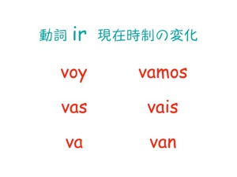

ir
> 動詞 ir 英語の “ to go” に対応するスペイン語の動詞は “ ir” 現在時制の変化形は、不定形とはずいぶん違うので注意 行き先を示す前置詞（英語では to ）は “ a ” “ir a + 動詞の不定形” という形で、英語の “ be goint to 〜” と同じ意味を表す ¿Adónde? どこへ行くの？ Where to? ⇒ 国名 ¿ Adónde vas? - Voy a España . Voy a Madrid y Barcelona . ¿Va usted a Argentina ? - No, no voy a Argentina . Voy a Chile . ¿Cuándo? いつ行くの？ When? ⇒ 月の言い方 ⇒ 四季 ¿ Cuándo vas a México? - Voy en agosto . ¿Va usted a Venezuela en septiembre ? - No, voy en octubre . ¿Con quién? 誰と行くの？ With whom? ¿ Con quién vas a Tokio? - Voy con Juan y Carmen . ¿Va usted a Kioto con la señorita Vásquez ? - No, voy sola .* * solo, sola = alone ¿En qué? 何で行くの？ By what? ⇒ 交通手段 ¿ En qué vas al centro? - Voy en bicicleta . ¿Vais al concierto en taxi ? - No, vamos a pie .* * a pie = on foot
